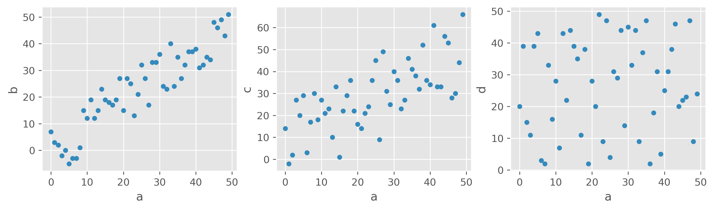
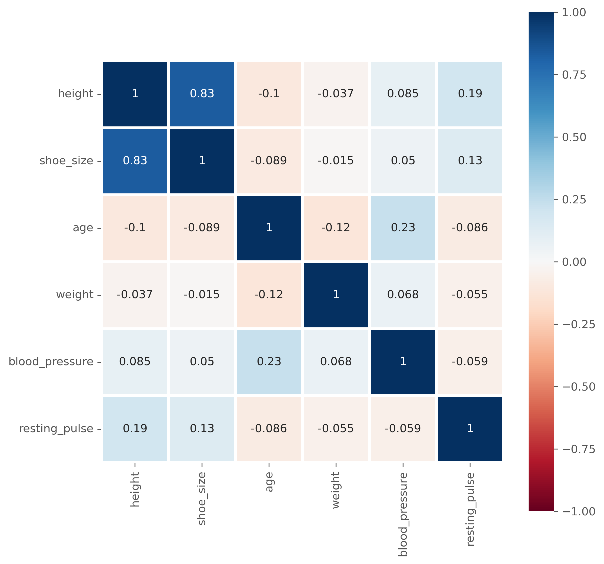
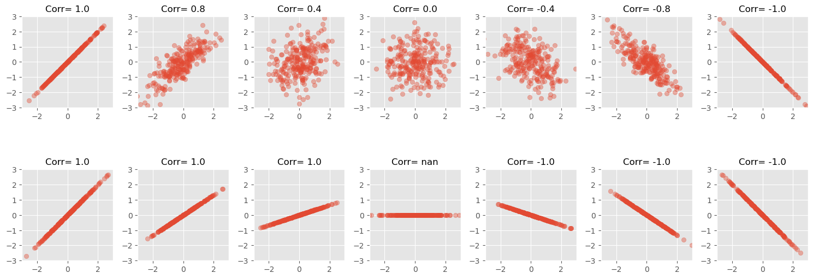
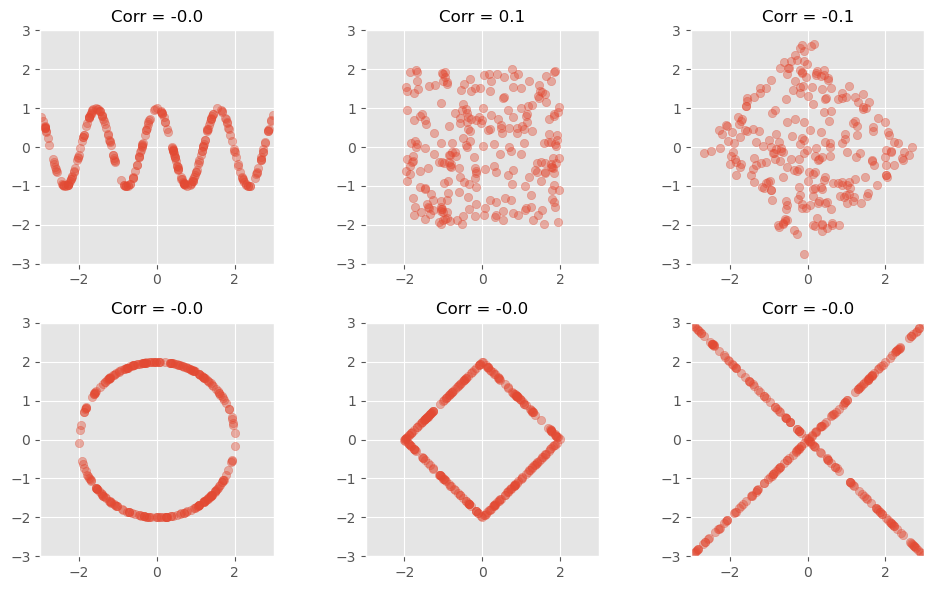
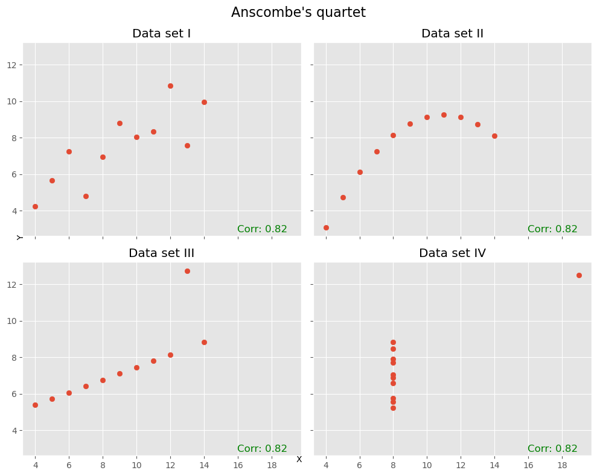
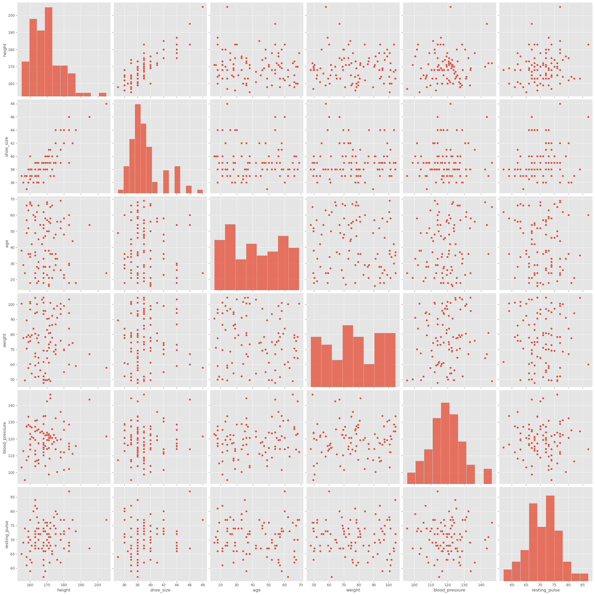
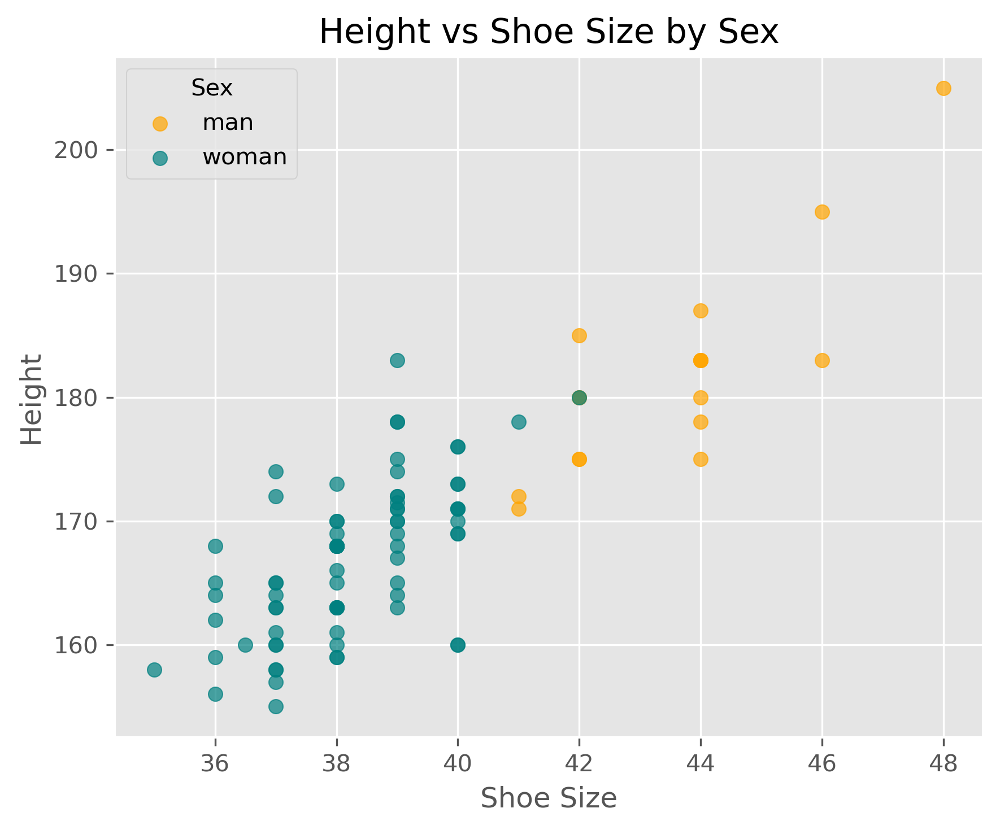
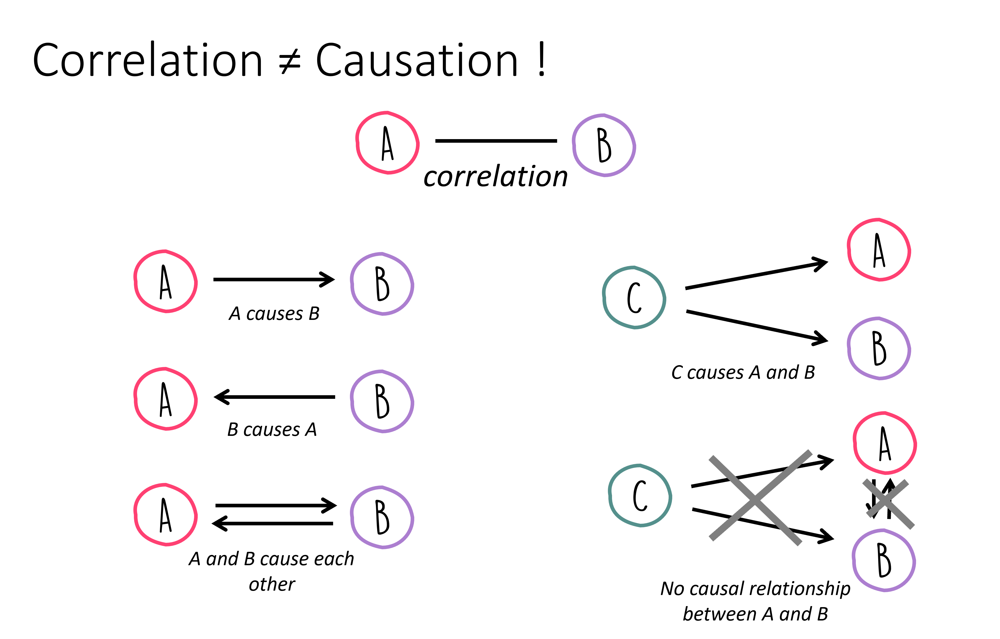
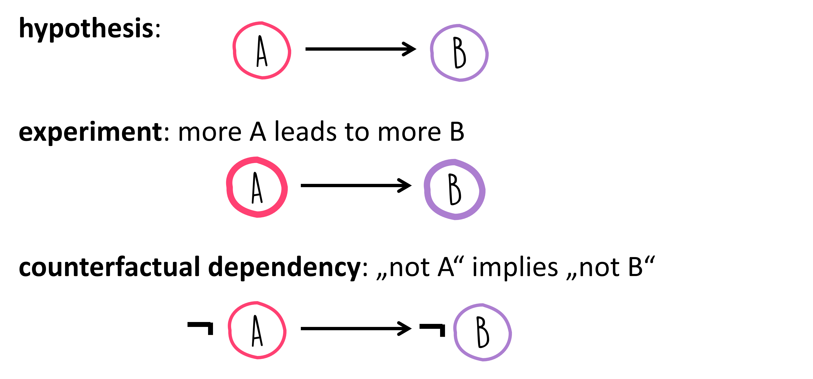

Correlation Analysis#
Correlation analysis is a fundamental statistical tool used to study the relationship between two or more features. The term “correlation” originates from the Latin correlatio, meaning a mutual relationship. In statistics, correlation is used as a measure of association, that is, as a numerical way of describing how strongly two variables tend to vary together.
Understanding correlation is important in data science for several reasons. Correlations can help us identify potentially interesting relationships in the data, detect redundant variables, and guide feature selection in later modeling steps. They are also often a useful starting point for a deeper investigation of a system. At the same time, we have to be careful: correlation and causation are very clearly not the same.
In everyday language, we often say that two things “correlate” when they seem to go together or line up well. In statistics, however, we want something more precise: a numerical measure that tells us whether an association exists and, if so, how strong it is.
Covariance, and the (Pearson) correlation coefficient#
Covariance
A natural starting point is the concept of variance, which measures how strongly the values of a single variable vary around their mean. If we now move from one variable to two variables, we arrive at covariance.
Covariance measures whether two variables tend to increase and decrease together. If large values of one variable tend to occur together with large values of the other, the covariance will be positive. If large values of one variable tend to occur together with small values of the other, the covariance will be negative.
The formula for covariance between two variables X and Y is given by:
where \(x_i\) and \(y_i\) are the individual values and \(\overline{X}\) and \(\overline{Y}\) are the means of \(X\) and \(Y\), respectively.
Covariance is useful in theory, but in practice it is often difficult to interpret directly because its value depends on the scale of the variables.
Pearson Correlation Coefficient
To make the measure easier to interpret, we can normalize the covariance. This gives us the Pearson correlation coefficient, often simply called the correlation coefficient.
The Pearson Correlation Coefficient is calculated as:
The Pearson correlation coefficient is always between -1 and 1, which provides a clearer, scale-independent measure of the relationship between \(X\) and \(Y\). A value close to 1 indicates a strong positive linear relationship, whereas a value close to -1 indicates a strong negative linear relationship. Values close to 0 indicate little or no linear relationship.
The important word here is linear. Pearson correlation is designed to capture linear associations, not arbitrary relationships, as we will see in some of the following examples.
corr_data.head(3)
| a | b | c | d | |
|---|---|---|---|---|
| 0 | 0 | 7 | 14 | 20 |
| 1 | 1 | 3 | -2 | 39 |
| 2 | 2 | 2 | 2 | 15 |
We created some toy data with four features: a, b, c, and d. One of the simplest ways to look for interesting relationships between variables is to plot one feature against another.

What would you say, which features are correlated, and which are not?
Looking at the three scatter plots above, most people would probably agree that a and b show a strong positive relationship, a and c still show a visible but weaker one, and a and d appear largely unrelated. This already suggests that correlation should not only tell us whether a relationship exists, but also how strong it is.
For these examples, the Pearson correlation coefficients are:
Corr(a, b) = 0.91
Corr(a, c) = 0.70
Corr(a, d) = 0.07
We therefore observe a strong positive linear correlation between a and b, a more moderate positive linear correlation between a and c,
and almost no linear correlation between a and d.
Correlation Matrix#
For datasets with many numerical variables, it is often useful to calculate all pairwise Pearson correlations at once. The result is called a correlation matrix.
For variables a, b, and c, this matrix contains the Pearson correlation coefficients for all possible pairs:
a |
b |
c |
|
|---|---|---|---|
a |
\(Corr(a, a)\) |
\(Corr(b, a)\) |
\(Corr(c, a)\) |
b |
\(Corr(a, b)\) |
\(Corr(b, b)\) |
\(Corr(c, b)\) |
c |
\(Corr(a, c)\) |
\(Corr(b, c)\) |
\(Corr(c, c)\) |
The diagonal is always 1, because every variable is perfectly correlated with itself. The off-diagonal entries are the interesting ones, because they show the strength and direction of the association between different variables.
Using pandas, we can compute such a matrix very easily:
corr_data.corr()
| a | b | c | d | |
|---|---|---|---|---|
| a | 1.000000 | 0.913443 | 0.697268 | 0.073561 |
| b | 0.913443 | 1.000000 | 0.594195 | 0.063557 |
| c | 0.697268 | 0.594195 | 1.000000 | 0.071658 |
| d | 0.073561 | 0.063557 | 0.071658 | 1.000000 |
A more realistic example
In the following, we continue to work with generated data, but now with a dataset that is at least somewhat more realistic. Suppose we want to investigate whether body-related variables show interesting correlations. We begin with a toy dataset containing variables such as height, shoe size, age, weight, blood pressure, and resting pulse.
| time | sex | height | shoe_size | age | eye_color | weight | blood_pressure | resting_pulse | |
|---|---|---|---|---|---|---|---|---|---|
| 0 | 04.10.2016 17:58:51 | woman | 160.0 | 40.0 | 67 | blue | 75.7 | 113.8 | 63 |
| 1 | 04.10.2016 17:58:59 | woman | 171.0 | 39.0 | 21 | brown | 50.2 | 98.9 | 67 |
| 2 | 04.10.2016 18:00:15 | woman | 174.0 | 39.0 | 46 | brown | 97.2 | 118.3 | 75 |
| 3 | 04.10.2016 18:01:17 | woman | 176.0 | 40.0 | 33 | brown | 91.1 | 100.4 | 79 |
| 4 | 04.10.2016 18:01:22 | man | 195.0 | 46.0 | 54 | blue | 67.0 | 143.5 | 67 |
As it was introduced in the previous sections, we would often do a quick first inspection of the data using simple statistical measures. In Pandas this is very easy to do:
data_people.describe()
| height | shoe_size | age | weight | blood_pressure | resting_pulse | |
|---|---|---|---|---|---|---|
| count | 100.000000 | 100.00000 | 101.000000 | 101.000000 | 101.000000 | 101.000000 |
| mean | 165.233800 | 39.77500 | 41.673267 | 77.370297 | 119.494059 | 70.722772 |
| std | 39.817544 | 5.55613 | 16.067426 | 17.321533 | 10.021515 | 5.841436 |
| min | 1.630000 | 35.00000 | 16.000000 | 47.700000 | 95.600000 | 57.000000 |
| 25% | 163.000000 | 38.00000 | 28.000000 | 61.700000 | 113.800000 | 67.000000 |
| 50% | 168.500000 | 39.00000 | 38.000000 | 77.700000 | 119.700000 | 71.000000 |
| 75% | 174.250000 | 40.00000 | 56.000000 | 93.700000 | 125.800000 | 74.000000 |
| max | 364.000000 | 88.00000 | 71.000000 | 105.300000 | 146.500000 | 87.000000 |
As introduced in previous chapters, one of the first things we often do is inspect a dataset using simple summary statistics. In pandas, this is very easy.
In the table above, some values already look suspicious. For example, the minimum height is 1.63, while the maximum height is 364.0. Clearly, something is wrong here. Perhaps some entries were recorded in different units, perhaps there are input errors, or perhaps someone entered nonsense values. These are typical issues that a quick first inspection can reveal.
Before computing correlations, we therefore do a small amount of cleaning and retain only values within roughly plausible bounds.
mask = (data_people["shoe_size"] < 50) & (data_people["height"] > 100) & (data_people["height"] < 250)
data_people = data_people[mask]
We can then move on to computing the correlations:
data_people.corr(numeric_only=True)
| height | shoe_size | age | weight | blood_pressure | resting_pulse | |
|---|---|---|---|---|---|---|
| height | 1.000000 | 0.834646 | -0.104061 | -0.036888 | 0.085438 | 0.188240 |
| shoe_size | 0.834646 | 1.000000 | -0.089209 | -0.014565 | 0.049667 | 0.133353 |
| age | -0.104061 | -0.089209 | 1.000000 | -0.120862 | 0.233381 | -0.085840 |
| weight | -0.036888 | -0.014565 | -0.120862 | 1.000000 | 0.067986 | -0.054658 |
| blood_pressure | 0.085438 | 0.049667 | 0.233381 | 0.067986 | 1.000000 | -0.058540 |
| resting_pulse | 0.188240 | 0.133353 | -0.085840 | -0.054658 | -0.058540 | 1.000000 |
Question: What does that actually mean?
Instead of as a matrix with values, the correlation matrix is often also graphically represented, especially for larger datasets, to easily spot particularly high and low coefficients.
fig, ax = plt.subplots(figsize=(8, 8), dpi=300)
sb.heatmap(
data_people.corr(numeric_only=True), # this is required for pandas >= 2.0, but also generally a good idea.
vmin=-1, vmax=1,
square=True, lw=2,
annot=True, cmap="RdBu",
ax=ax,
)
plt.show()

Limitations of the (Pearson) Correlation Measure#
Pronounced high (or low) correlation coefficients indicate actual correlations in the data, which, in the case of the Pearson correlation, usually means that there is a clear linear dependency between two features.
This approach, however, has several limitations that can complicate the interpretation of such correlation measures. In the following, the most common pitfalls will be presented.
The slope does not determine the correlation strength#
A strong correlation means that the data follows a clear linear pattern. But the value of the Pearson correlation coefficient does not tell us how steep that line is. It is a measure of how well the data follows a linear relationship, not of the slope of that relationship.
That is why two datasets can have very different slopes but the same correlation coefficient.
For a perfectly constant variable, the Pearson correlation is not defined, because the standard deviation is zero.
/home/runner/micromamba/envs/data_science/lib/python3.12/site-packages/numpy/lib/_function_base_impl.py:3023: RuntimeWarning: invalid value encountered in divide
c /= stddev[:, None]
/home/runner/micromamba/envs/data_science/lib/python3.12/site-packages/numpy/lib/_function_base_impl.py:3024: RuntimeWarning: invalid value encountered in divide
c /= stddev[None, :]

Pearson correlation detects linear relationships only#
A high positive or negative Pearson correlation indicates a clear linear relationship. But a low Pearson correlation is much harder to interpret. Most importantly, a low Pearson correlation does not mean that there is no meaningful relationship between two variables.
The following figure shows several datasets with visible structure, but little or no Pearson correlation.

Another prominent example to illustrate how little the Pearson correlation coefficient sometimes tells us is the datasaurus dataset from the last chapter. Here, too, the data is distributed very differently, but the correlation coefficient remains the same.
Pearson correlation is sensitive to outliers#
Another famous illustration of the limitations of correlation is Anscombe’s quartet [Anscombe, 1973]. These four datasets have very similar summary statistics and almost identical Pearson correlations, yet their actual distributions look very different. Among other things, this example shows how strongly correlation can be influenced by a small number of unusual points.

Looking beyond a single number#
As with many summary statistics, correlation coefficients can be useful, but they can also hide important structure. This is why it is often a good idea not to rely on a single number alone. Whenever possible, we should also inspect the actual distributions and scatter plots.
If there are not too many variables, tools such as pairplot() from seaborn can be very helpful.
sb.pairplot(data_people, height=4)
plt.show()

It is of course also easily possible to plot only the parts we are most interested in, for instance:

What Does a Correlation Tell Us?#
If we discover a strong correlation in our data, what does that actually tell us?
First, it tells us that two variables share information. If the correlation is very high, then knowing one variable already tells us a lot about the other. In some cases, this is useful. In other cases, it means that one of the variables may be redundant.
A correlation of 1.0 or -1.0 is not necessarily exciting. In practice, such perfect correlations often arise when two variables describe essentially the same thing in different forms. Typical examples are temperature in Celsius and Kelvin, or the diameter and circumference of a circle. In such cases, the correlation mainly tells us that one of the variables may be unnecessary.
More generally, correlations can be useful in at least two ways. Sometimes the correlation itself is already enough for the task at hand. In other cases, it is only a first clue that motivates deeper investigation.
Correlation vs. Causality#
Searching for correlations is often a useful early step in data analysis. But why? What can we actually do with a discovered correlation?
The answer depends on the question we are trying to answer. In some cases, a correlation is already useful on its own. Suppose an online store finds that customers who buy item X also often buy item Y. Even without understanding the deeper reason behind this relationship, the store may already be able to use this information for recommendations, product placement, or inventory planning.
In other cases, however, the correlation is only the beginning. Then we want to know why two variables are related. Is one influencing the other? Is there a third factor affecting both? Or is the observed relationship perhaps just accidental?
This brings us to the distinction between correlation and causality. A correlation means that two variables are statistically associated. A causal relationship means that one variable has an effect on the other.
These two ideas are not the same.
In everyday life, people often jump quickly from correlation to causation. For example:
“I ate fruit from tree B and then fell ill.”
“I took medicine X, and an hour later I felt better.”
In both instances, we essentially only observe a correlation, yet we often tend to quickly infer a causal link. But from correlation alone, we cannot yet conclude that one event caused the other. Perhaps something else caused the illness. Perhaps the person would have improved anyway, even without the medicine.
This is why the phrase “correlation is not causation” is so important.
If two variables \(A\) and \(B\) are correlated, many different situations may be possible:

So a correlation is often best understood as a clue, not as proof of a causal relationship.
How, then, can we move from correlation to causality?
There is no single universal recipe. In many cases, causal questions require much more than observational data alone. Carefully designed experiments, interventions, background knowledge, and strong theoretical reasoning often play a central role. For example, if we suspect that \(A\) causes \(B\), we may ask whether changing or removing \(A\) also changes \(B\), while other relevant factors are controlled for.
This is one reason why causal inference is a major topic of its own, far beyond the scope of this introductory chapter. For now, the key lesson is this: Correlation can point us toward interesting relationships, but it does not by itself tell us why those relationships exist.
That is exactly why correlation analysis is both powerful and dangerous: powerful because it helps us find patterns quickly, and dangerous because it tempts us to overinterpret them.

Correlation analysis is a simple but powerful tool for exploring relationships between variables. It can help us identify patterns, detect redundancy, and generate hypotheses for further investigation. At the same time, correlation must be interpreted with care. Pearson correlation measures linear association only, can be strongly influenced by outliers, and tells us nothing directly about causality.
More on Correlations!#
The Pearson correlation coefficient is an important and very widely used measure, but it is by no means the only way to describe relationships between variables. In particular, Pearson correlation is mainly suited for linear relationships between numerical variables and can be quite sensitive to outliers.
A very important alternative is the Spearman rank correlation coefficient. Instead of working directly with the raw numerical values, Spearman correlation first replaces the values by their ranks and then computes the Pearson correlation on those ranks. This makes it especially useful when variables are related in a monotonic but not necessarily linear way. In simpler words: if one variable tends to increase whenever the other increases, even if not along a straight line, Spearman correlation can often detect that relationship better than Pearson correlation. It is also often more robust when the data contains outliers or when exact distances between values are less meaningful than their ordering.
If \(R(X)\) and \(R(Y)\) denote the ranks of the values of \(X\) and \(Y\), then Spearman correlation is simply the Pearson correlation of those ranks:
In the special case where there are no tied ranks, Spearman’s rho can also be written as:
where \(d_i\) is the difference between the two ranks of observation \(i\).
Closely related is Kendall’s tau, another rank-based correlation measure. Kendall’s tau is based on the idea of concordant and discordant pairs. A pair of observations is called concordant if the order of the two observations is the same in both variables. For example, if person A has both a higher value in variable X and a higher value in variable Y than person B, the pair is concordant. If the order goes in opposite directions, the pair is discordant. Kendall’s tau summarizes how often such agreements and disagreements occur.
In rough terms:
Pearson correlation measures linear relationships.
Spearman correlation measures whether variables are related in a consistently increasing or decreasing order.
Kendall’s tau also focuses on rank agreement, but through concordant and discordant pairs.
In Python, pandas can compute all three directly through the .corr() method by choosing the appropriate method. The current pandas documentation lists 'pearson', 'kendall', and 'spearman' as supported options.
#data_people.corr(numeric_only=True, method="pearson")
#data_people.corr(numeric_only=True, method="spearman")
data_people.corr(numeric_only=True, method="kendall")
| height | shoe_size | age | weight | blood_pressure | resting_pulse | |
|---|---|---|---|---|---|---|
| height | 1.000000 | 0.644079 | -0.068464 | 0.001637 | -0.000468 | 0.115721 |
| shoe_size | 0.644079 | 1.000000 | -0.037930 | 0.012109 | -0.018545 | 0.062674 |
| age | -0.068464 | -0.037930 | 1.000000 | -0.070589 | 0.122965 | -0.045442 |
| weight | 0.001637 | 0.012109 | -0.070589 | 1.000000 | 0.065130 | -0.040783 |
| blood_pressure | -0.000468 | -0.018545 | 0.122965 | 0.065130 | 1.000000 | -0.040103 |
| resting_pulse | 0.115721 | 0.062674 | -0.045442 | -0.040783 | -0.040103 | 1.000000 |
If you want to compute the correlation between two specific variables, scipy.stats also provides dedicated functions. SciPy offers spearmanr() for Spearman correlation and kendalltau() for Kendall’s tau. Both functions can also return p-values for testing against the null hypothesis of no association.
from scipy.stats import spearmanr, kendalltau
# Example: correlation between height and shoe_size
rho, p_s = spearmanr(data_people["height"], data_people["shoe_size"])
tau, p_k = kendalltau(data_people["height"], data_people["shoe_size"])
print(f"Spearman rho = {rho:.3f}, p-value = {p_s:.3g}")
print(f"Kendall tau = {tau:.3f}, p-value = {p_k:.3g}")
Spearman rho = 0.778, p-value = 3.11e-20
Kendall tau = 0.644, p-value = 2.11e-17
A very good habit in practice is this: if you suspect that a relationship may not be linear, or if your data contains outliers or ordinal variables, do not look at Pearson correlation alone.
More to read
Freely available books that also cover a lot on correlations:
“Introduction to Statistics and Data Analysis” by Christian Heumann and Michael Schomaker Shalabh, [Heumann et al., 2022] link to pdf, this book contains code in R that can easily be converted to Python examples.
“Statistical Methods for Data Analysis” by Luca Lista, [Lista, 2023] link to pdf
David Lane, “Introduction to Statistics”, [Lane et al., 2003], https://open.umn.edu/opentextbooks/textbooks/459